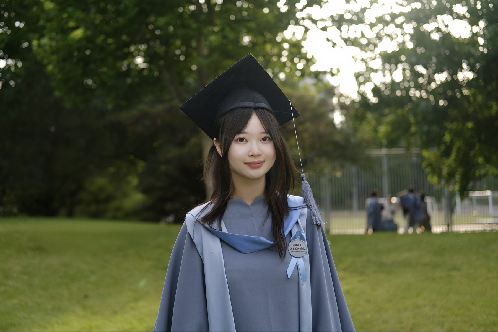

About
Hi, I’m Wanyu.
I am a researcher and educator working across art education, environmental education, and human–nature relationships. I explore how creative and embodied learning can reshape the ways people perceive and relate to the natural world.
With a background in art and design, I bring together research, curriculum design, and teaching practice. My work spans plant-centered workshops, community-based cultural heritage education, and experiments in visual and interactive media.
I completed my master’s degree in Art Education at the Central Academy of Fine Arts in 2026, following a bachelor’s degree in Art and Design in 2023.
Get in touch
Teaching & collaboration
Full CV ↗Learning with plants
Designed and led a plant-centered ecological art education workshop for undergraduate students at CAFA.
Learning with heritage
Initiated a community-based workshop connecting Bai cultural heritage and contemporary design in Jianchuan.
Supporting shared inquiry
Teaching assistant for Exploration of the Emotional Landscape between People and Objects, Cumulus Beijing.
Work experience
Design Teacher
Beijing Success Trajectory Education Technology Co., Ltd. · Design curricula and teaching for high-school students.
Design Teacher
Beijing Yishu Kids Art Institute · Ecological art curriculum for children aged 6–12.
Curatorial Assistant
Xinyi International Art Museum · Exhibition planning, installation, and public outreach.